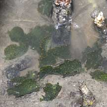
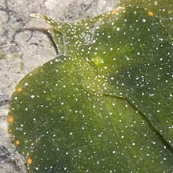

|
|
| sea slugs text index | photo index |
| Phylum Mollusca > Class Gastropoda > sea slugs > Order Sacoglossa > Elysia species |
| Mangrove
leaf slug Elysia bangtawaensis Family Plakobranchidae updated Jun 2020 Where seen? This large leaf-like slug is sometimes seen in large numbers in our mangroves. They are named after Bangtawa in Thailand. Features: 4-5cm. Body long with a pair of very large 'wings' (called parapodia). Body green with tiny white spots all over. Yellow or orange spots along the edge of the body. Tips of rhinophores pale or white. The parapodia are often held in ruffles so that the animal resembles seaweed. What does it eat? According to Swennen, they eat tiny algae that "grows in high mud between mangrove roots. This often means the slugs cannot reach their food except at high spring tides. Experiments showed that they can feed for many hours and can survive without food for two to three months" How do they survive without food?! They retain the choloroplasts that they suck out of their food. And can use the chloroplasts to make food from sunlight. Swennen adds that this "does not mean that they like direct sun light, they seem to dislike strong light and prefer the shade. Tests showed that some can keep their chloroplasts for months. However, then they become gradually smaller and their green colour changes into yellowish. This may suggest that they not only need new chloroplasts, but also some additional substances from their food alga. The famished slugs regain their colour and size after they feed on algae." See details in the Family Elysiidae for more about how the slug eats and uses the seaweed's chloroplasts. |
 Kranji Nature Trail, Jan 11 |
 |
 |
| Mangrove leaf slugs on Singapore shores |
On wildsingapore
flickr
|
| Other sightings on Singapore shores |
Links
References
|